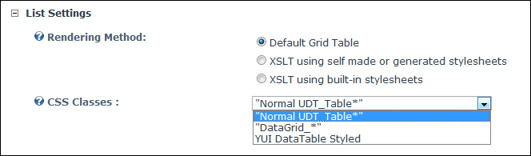

Rendering a List using the Default Grid Table
How to set the layout and design of a list using one of the included designs on the Forms and Lists module
- Select
 Form and List Configuration from the Form and List module actions menu - OR - Click the Form and List Configuration button.
Form and List Configuration from the Form and List module actions menu - OR - Click the Form and List Configuration button.
- Maximize
 the List Settings section.
the List Settings section.
- At Rendering Method, select Default Grid Table. This displays the CSS Classes field.
- Optional. Maximize
the Grid Table Settings section and set any of these optional settings:
- At CSS Classes, select the CSS classes to be used. Two options are provided:
- "Normal UDT_Table*": This is the default table layout.
- "DataGrid_*": This table uses a smaller font and row color alternates from black to red.
- YUI DataTable Styled: This table displays borders.
- Click the Save Configuration and Return link.

Setting the List Design using Default Grids